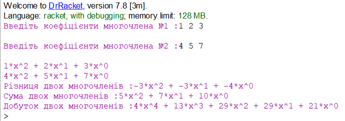
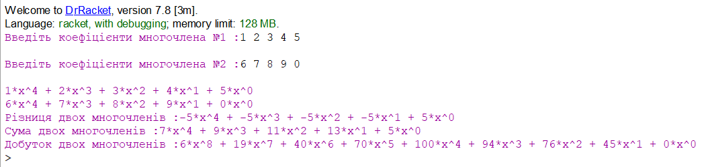

Мета
Навчитися писати процедури, що здійснюють символьне диференціювання та реалізують арифметику поліномів
Завдання
Написати процедури, що здійснюють символьне диференціювання та реалізують арифметику поліномів
Хід роботи
Основні визначення і найпростіші властивості Нехай K - довільне кільце. Многочленом, або поліномом, від змінної x називається вираз виду a0x n + a1x n-1 +. . . + An-1x + an, де aj ∈ K (j = 0, 1,..., N), а x - символ, званий незалежної змінної. Багаточлени, як правило, ми будемо позначати латинськими літерами, поруч з якими іноді в дужках ставити ім'я незалежної змінної. Наприклад, многочлен (5.1) позначимо f, або, що еквівалентно, f (x), тоді можна записати: f = a0x n + a1x n-1 +. . . + An-1x + an. Величини aj називаються коефіцієнтами многочлена, а вираження ajx n-j - членами многочлена f, при цьому n-j називається ступенем Мономах. Якщо a0 6 = 0, то n називається ступенем многочлена, а a0x n - його старшим членом. Ступінь многочлена позначається deg f. Многочлен f = 0 називається нульовим; його ступінь не визначена. Багаточлени 1-й, 2-й і 3-й ступеня називаються лінійними, квадратними і кубічними відповідно. Багаточлени нульової ступеня разом з нульовим многочленом називають константами. У записі (5.2) члени з нульовим коефіцієнтом зазвичай опускають. Також використовують інші звичайні угоди при роботі з алгебраїчними виразами, наприклад, замість 1 · x 4 + (-2) · x 3 + 0 · x 2 + (-1) · x + (-5) пишуть x 4 -2x 3 -x -5. Крім запису, в якій члени записані в порядку убування ступенів, часто використовується запис з упорядкуванням членів по зростанню ступенів та ін. Записи. Два багаточлена (5.2) і g = b0x m + b1x m-1 +. . . + Bm-1x + bm рівні, якщо m = n і aj = bj (j = 0, 1,..., N).
#lang racket
(define (create-zero-list-step tmp-list length-of-list)
(cond
[(= (length tmp-list) length-of-list) tmp-list]
[else (create-zero-list-step (append tmp-list (list 0)) length-of-list)]
)
)
(define (create-zero-list length-of-list)
(create-zero-list-step (list) length-of-list)
)
(define (mult-polinoms-step polinom-1 polinom-2 temp-polinom result-polinom)
(cond
[(empty? polinom-1) result-polinom]
[else (mult-polinoms-step
(cdr polinom-1)
polinom-2
(append temp-polinom (list 0))
(add-polinoms result-polinom (map (lambda (elem) (* (car polinom-1) elem)) (append temp-polinom polinom-2)))
)
]
)
)
(define (mult-polinoms polinom-1 polinom-2)
(mult-polinoms-step polinom-1 polinom-2 (list ) (create-zero-list (length polinom-2)))
)
(define (add-polinoms-step polinom-1 polinom-2 result-polinom)
(cond
[(empty? polinom-2) (append result-polinom polinom-1)]
[(empty? polinom-1) (append result-polinom polinom-2)]
[else (add-polinoms-step (cdr polinom-1) (cdr polinom-2) (append result-polinom (list (+ (car polinom-1) (car polinom-2)))))]
)
)
(define (add-polinoms polinom-1 polinom-2)
(add-polinoms-step polinom-1 polinom-2 (list ))
)
(define (substract-polinoms-step polinom-1 polinom-2 result-polinom)
(cond
[(empty? polinom-2) (append result-polinom polinom-1)]
[(empty? polinom-1) (append result-polinom (map (lambda (elem) (* -1 elem)) polinom-2))]
[else (substract-polinoms-step (cdr polinom-1) (cdr polinom-2) (append result-polinom (list (- (car polinom-1) (car polinom-2)))))]
)
)
(define (substract-polinoms polinom-1 polinom-2)
(substract-polinoms-step polinom-1 polinom-2 (list ))
)
(define (mult-polinom-by-number polinom number)
(map (lambda (coef) (* coef number)) polinom)
)
(define (polinom->string-step polinom elem-index result-string)
(cond
[( <= (length polinom) elem-index) (substring result-string 3)]
[else
(let (
[new-result-string (string-append (format " + ~a*x^~a" (list-ref polinom elem-index) elem-index) result-string)]
)
(polinom->string-step polinom (add1 elem-index) new-result-string)
)
]
)
)
(define (polinom->string polinom)
(polinom->string-step polinom 0 "")
)
(define (string-of-coef->polinom coef-string)
(define polinom-string (regexp-split #rx" +" coef-string))
(define polinom-real-numbers (map string->number polinom-string))
(reverse polinom-real-numbers )
)
(display "Введіть коефіцієнти многочлена №1 :")
(define polinom (string-of-coef->polinom (read-line (current-input-port))))
(display "\n")
(display "Введіть коефіцієнти многочлена №2 :")
(define polinom-2 (string-of-coef->polinom (read-line (current-input-port))))
(display "\n")
(display (polinom->string polinom))
(display "\n")
(display (polinom->string polinom-2))
(display "\n")
(display "Різниця двох многочленів :")
(display (polinom->string (substract-polinoms polinom polinom-2)))
(display "\n")
(display "Сума двох многочленів :")
(display (polinom->string (add-polinoms polinom polinom-2)))
(display "\n")
(display "Добуток двох многочленів :")
(display (polinom->string (mult-polinoms polinom polinom-2)))
(display "\n")
Результати


Перевірка результатів
1-4= -3, 2-5=-3, 3-7=-4, отже різниця вирахована правильно
1+4=5, 2+5=7, 3+7=10, отже сума знайдена правильно
1*4=4, 2*5=10, 3*7=21, отже добуток знайдено правильно
Висновки:
Отже, в результаті виконання лабораторної роботи було написано процедуру, що здійснюють символьне диференціювання та реалізуює арифметику поліномів. Результати роботи програми було перевірено, вона працює коректно, без збоїв.